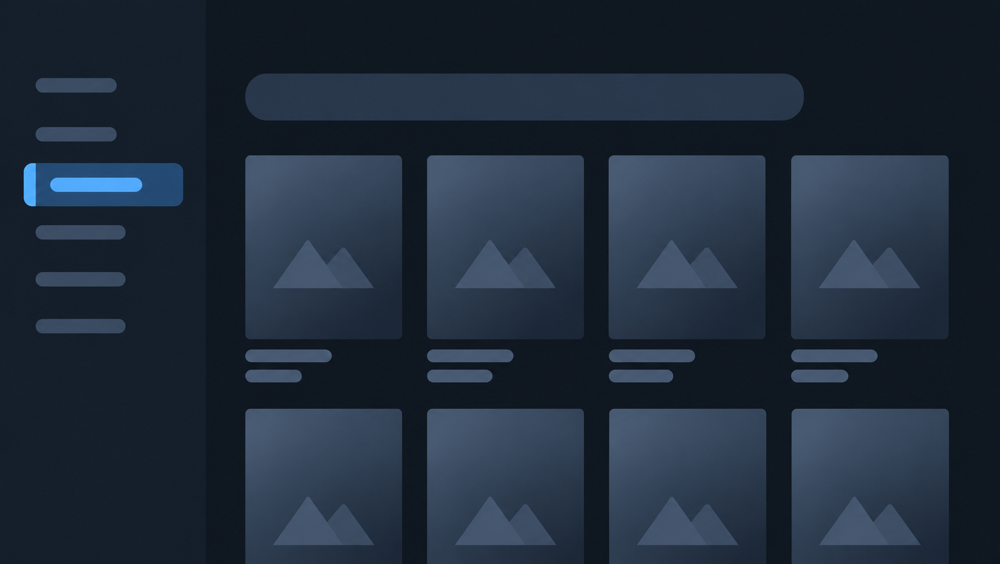

Software / Mobile
Videojuegos
Movie Inbox
ESAplicación web para guardar películas de interés, organizar una lista personal y llevar un seguimiento de lo que quieres ver y lo que ya has visto.
ENWeb application to save movies of interest, organize a personal list and keep track of what you want to watch and what you have already seen.
En desarrollo / In development
